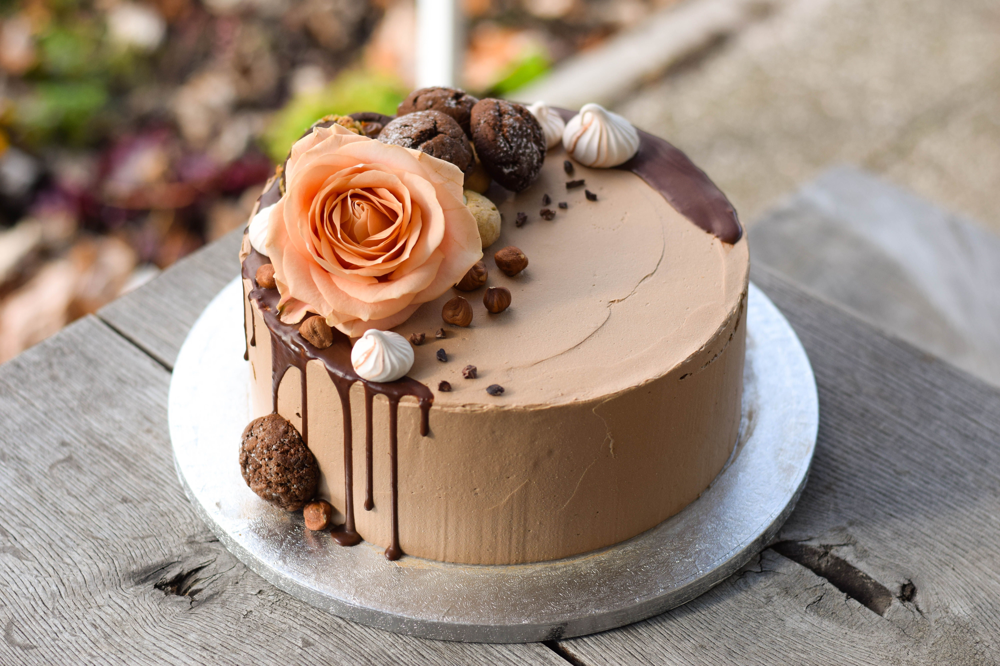

Dessert Recipes

Chocolate Cake
Ingredients

- 1 and 3/4 cups all-purpose flour
- 1 and 1/2 cups granulated sugar
- 3/4 cup unsweetened cocoa powder
- 1 and 1/2 teaspoons baking powder
- 1 and 1/2 teaspoons baking soda
- 1 teaspoon salt
- 2 large eggs
- 1 cup whole milk
- 1/2 cup vegetable oil
- 2 teaspoons vanilla extract
- 1 cup boiling water
Instructions
- Preheat your oven to 350°F (175°C). Grease and flour two 9-inch round baking pans.
- In a large bowl, combine the flour, sugar, cocoa powder, baking powder, baking soda, and salt.
- Add the eggs, milk, vegetable oil, and vanilla extract to the dry ingredients. Beat on medium speed until well combined.
- Stir in the boiling water until the batter is smooth. The batter will be thin, but that's okay.
- Divide the batter evenly between the prepared baking pans.
- Bake for 30-35 minutes, or until a toothpick inserted into the center comes out clean.
- Cool the cakes in the pans for 10 minutes, then remove them to a wire rack to cool completely.
- Frost and decorate as desired.
Fruit Tart
Ingredients

- 1 pie crust (store-bought or homemade)
- 1 cup pastry cream (store-bought or homemade)
- Assorted fresh fruits (strawberries, kiwi, blueberries, etc.)
- 1/4 cup apricot jam
- 1 tablespoon water
Instructions
- Preheat your oven to 375°F (190°C).
- Roll out the pie crust and fit it into a tart pan. Trim any excess dough.
- Prick the bottom of the crust with a fork and line it with parchment paper. Fill with pie weights or dried beans.
- Bake the crust for 15-20 minutes, or until golden brown. Remove the parchment paper and pie weights, and let the crust cool completely.
- Spread the pastry cream evenly over the cooled crust.
- Arrange the fresh fruits on top of the pastry cream in a decorative pattern.
- In a small saucepan, heat the apricot jam and water over low heat until melted. Brush the glaze over the fruit to give it a shiny finish.
- Refrigerate the tart for at least 1 hour before serving.